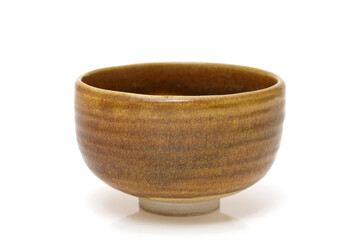
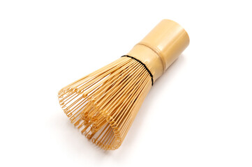
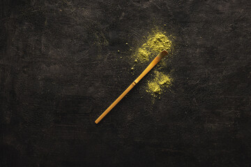

道具紹介 道具一覧
- 全て
- 抹茶茶碗
- 茶筅
- 茶杓
- 水指
-
茶碗
茶碗ちゃわんは、茶席において必ず客が手に触れるもので、もっとも親しまれている道具の一つです。
一般的に陶器とうきや磁器じきでできており、絵付けえつけが施されているものもあります。 -
茶碗
茶碗ちゃわんは、茶席において必ず客が手に触れるもので、もっとも親しまれている道具の一つです。
一般的に陶器とうきや磁器じきでできており、絵付けえつけが施されているものもあります。 -
茶碗
茶碗ちゃわんは、茶席において必ず客が手に触れるもので、もっとも親しまれている道具の一つです。
一般的に陶器とうきや磁器じきでできており、絵付けえつけが施されているものもあります。
-
● 茶碗（ちゃわん）
茶碗は、茶席において必ず亭主が手に触れるもので、 もっとも親しまれている道具の一つです。
一般的に陶器や磁器でできており、 絵付けが施されているものもあります。
-
● 茶筅(ちゃせん)
茶筅（ちゃせん）は、抹茶を点てるための専用の道具です。主に竹でできており、抹茶を美味しく仕上げる上で重要な役割を担います。
・用途と素材: 抹茶と湯を混ぜ合わせ、泡立てるために使用します。ほとんどの製品が竹製です。
・穂先の数（穂数）: 用途に応じて穂の本数は様々です。標準的なものは外穂と内穂を合わせて128本程度とされています。
・使い分け: 濃茶を練る際は穂数の少ない丈夫なものを、薄茶を点てる際は穂数の多いしなやかなものを使うのが一般的です。
・各部の名称:
○櫂先（かいさき）: 抹茶をすくう先端の部分
○節（ふし）: 中央付近にある段差や膨らみ
○切り止め: 櫂先と反対側の端の部分
・主な素材: 一般的には竹製がほとんどですが、木や銀、象牙、獣角などで作られたものも存在します。
・保管方法: むき出しで保管するのではなく、使わないときは専用の「筒（つつ）」にしまって保護します。
-
● 茶杓(ちゃしゃく)
茶杓は、抹茶を点てる際に使われる道具の一つで、主に以下の特徴があります。
・役割と用途: 茶入れから抹茶をすくい取るための匙（さじ）です。
・形状: 抹茶の粉をすくいやすいよう、細長い形状をしており、先端には丸みがあります。
・サイズ: 長いもので直径21センチほど。抹茶をすくう部分は、横1センチ、縦2センチほどの楕円形が標準的な大きさです。
・取り扱い: 穂先はデリケートなため、力を入れすぎると破損の原因となります。優しく扱うことが長持ちさせる秘訣です。